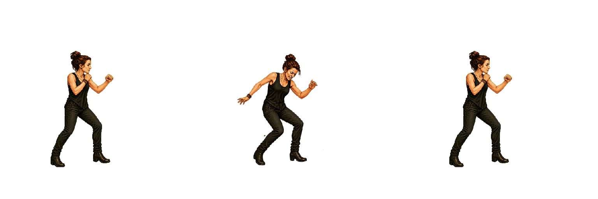
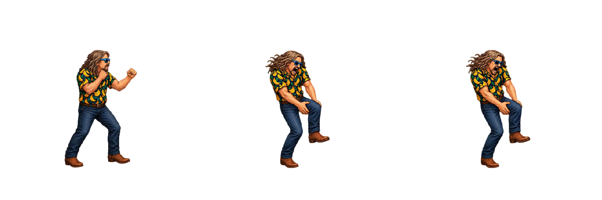
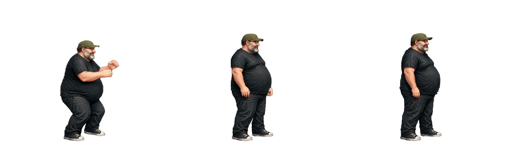
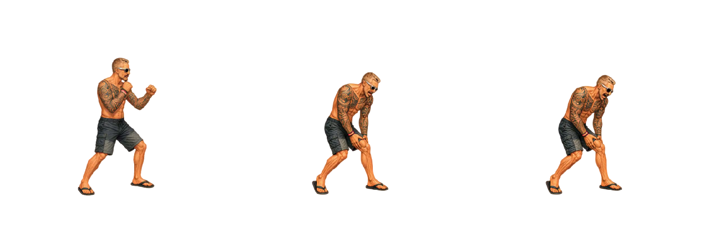
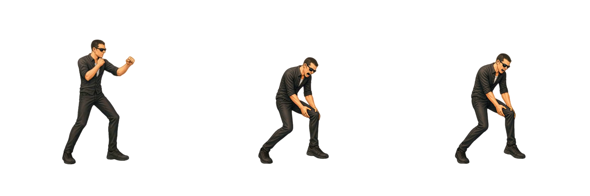
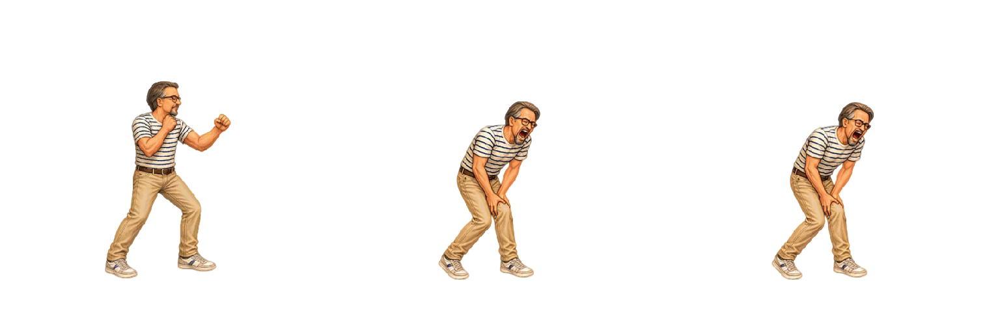
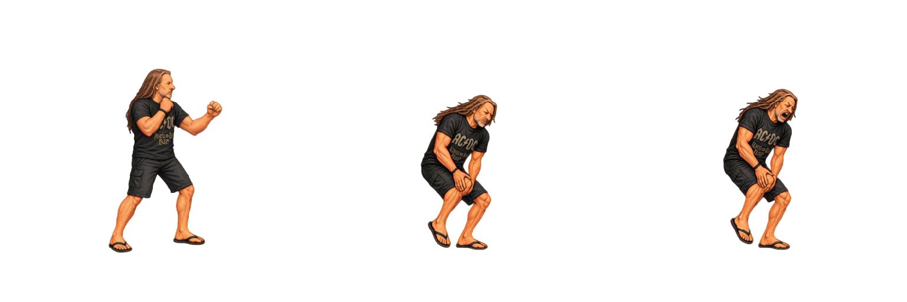

Timing Hurt basso
Tutti i sette personaggi eseguono questa reazione in 500 ms (0,5 s) a velocità 1×. FPS demo = numero frame × 2; ogni frame dura 500 / numero frame millisecondi, compreso l’ultimo.
Le tre pose mostrano ingresso, frame centrale e fine: il frame centrale non è un marcatore di impatto sincronizzato. La sequenza include esattamente i ritorni già presenti nell’animazione nominale Godot di Arianna; non sono aggiunti i recovery separati degli altri fighter.
Senza Loop si mantiene la posa finale; con Loop il ciclo dura 500 ms. “Riproduci tutte” riallinea anche i cicli successivi e i caricamenti progressivi. A 0,5× dura 1 s; a 2× dura 0,25 s. Le sequenze, i PNG, le altezze, le scale e gli ancoraggi restano invariati. Le durate Godot sono conservate come provenienza nel manifest.
Scarica CSV · Configurazione timing
| Personaggio | Ingresso / centro / fine | Frame | Durata | FPS demo | FPS Godot | Sequenza e note |
|---|---|---|---|---|---|---|
| Arianna |  Frame 1 / 4 / 7 | 7 | 500 ms | 14 | 24 | Sequenza sorgente: 1, 2, 3, 4, 5, 6, 1. Ritorno incluso nella sequenza Godot. |
| Bue |  Frame 1 / 6 / 11 | 11 | 500 ms | 22 | 48 | Sequenza sorgente: 1, 2, 3, 4, 5, 6, 7, 8, 9, 10, 11. |
| Mangler |  Frame 1 / 6 / 10 | 10 | 500 ms | 20 | 24 | Sequenza sorgente: 7, 8, 9, 10, 11, 12, 13, 14, 15, 16. Scala legacy 0.70; altezza 183 cm conservata. |
| Mileto |  Frame 1 / 6 / 11 | 11 | 500 ms | 22 | 48 | Sequenza sorgente: 1, 2, 3, 4, 5, 6, 7, 8, 9, 10, 11. |
| Oscare |  Frame 1 / 6 / 11 | 11 | 500 ms | 22 | 48 | Sequenza sorgente: 1, 2, 3, 4, 5, 6, 7, 8, 9, 10, 11. |
| Peirò |  Frame 1 / 6 / 11 | 11 | 500 ms | 22 | 48 | Sequenza sorgente: 1, 2, 3, 4, 5, 6, 7, 8, 9, 10, 11. |
| Torpe |  Frame 1 / 6 / 11 | 11 | 500 ms | 22 | 48 | Sequenza sorgente: 1, 2, 3, 4, 5, 6, 7, 8, 9, 10, 11. |